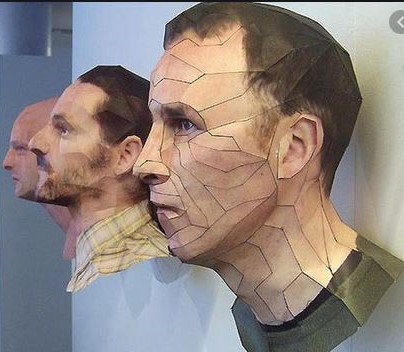
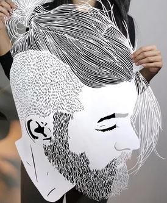

Paper cutting is the art of paper designs. The art has evolved uniquely all over the world to adapt to different cultural styles. One traditional distinction most styles share in common is that the designs are cut from a single sheet of paper as opposed to multiple adjoining sheets as in collage.
Silhouette can refer to the art of cutting outlines or portraits out of black paper. Modern-day paper cutters typically follow one or more of the "traditional" styles listed above, while others have begun to expand the art into new styles, motifs, and designs.Contemporary paper cutting is also sometimes associated with the art of stenciling, itself being derived from techniques used in graffiti art.  